Jedis 的用法单个 Jedis 实例不是线程安全的，于是我看见了这样的代码，这样的问题在于不停地在创建 Jedis 实例，而每一个 Jedis 就意味着一条连接:
1 | while (true) { |
所以，推荐使用 JedisPool 来获得更好的性能:
1 | final static JedisPool pool = new JedisPool(new JedisPoolConfig(), "localhost"); |
1 | cat /var/log/redis |
Redis 的全称是:
Redis 可以做:
Redis 不可以做:
豌豆荚开源了基于 Proxy 的 Redis 分布式实现 Codis
查看版本，Redis 借鉴了 Linux 操作系统对于版本号的命名规则: 版本号第二位如果是奇数，则为非稳定版本，如果是偶数，则为稳定版本:
1 | $redis-cli -v |
安装完 redis 之后，多了几个 redis 工具:
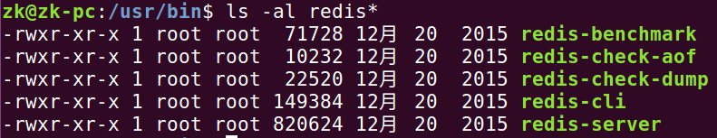
启动:
redis-sever 启动: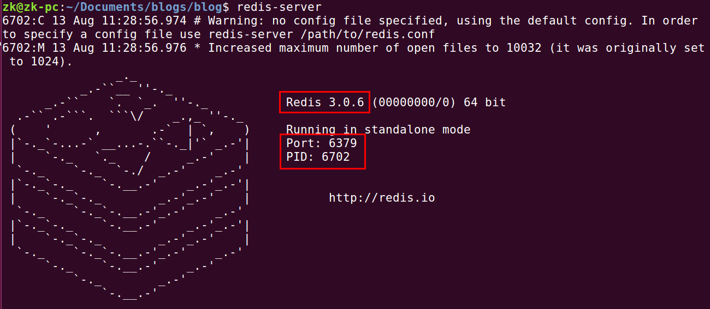
这种方式无法自定义配置，生成环境中根本不会使用
redis-server --port 6380 启动:如果需要修改的配置较多或者希望将配置保存到文件中，不建议使用这种方式
redis-sever xxx.conf 配置文件来启动:1 | redis-server ~/Documents/github/redis/redis.conf |
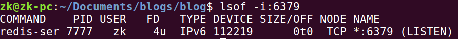
redis 默认的几个比较重要的配置:
1 | # By default Redis does not run as a daemon. Use 'yes' if you need it. |
redis-cli 连接到 redis-server 的两种方式:
1 | # 交互方式 |
停止 redis:
1 | /etc/init.d/redis-server restart |
Mac OS (未测试):
1 | redis-cli shutdown |
除了可以通过 shutdown 命令关闭 redis 服务之外，还可以通过 kill pid 的方式关闭 redis，但是不要粗暴地使用 kill -9 强制杀死 redis 服务，不但不会做持久化操作，还会造成缓冲区等资源不能被优雅关闭，极端情况会造成 AOF 和复制丢失数据的情况。
全局命令:
1 | # 输出所有键 |
dbsize 命令在计算键总数时不会遍历所有键，而是直接获取 Redis 内置的键总数变量，所以 dbsize 命令的时间复杂度是 O(1)。而 keys 命令会遍历所有键，所以它的时间复杂度是 O(n)，当 Redis 保存了大量键时，线上环境禁止使用。
1 | # 检查键是否存在 |
string, hash, list, set, zset 只是 Redis 对外的数据结构，实际上每种数据结构都有自己底层的内部编码实现，而且是多种实现，这样 Redis 会在合适的场景选择合适的内部编码，可以通过 object encoding 命令查询内部编码:
1 | 127.0.0.1:6379> object encoding msg |
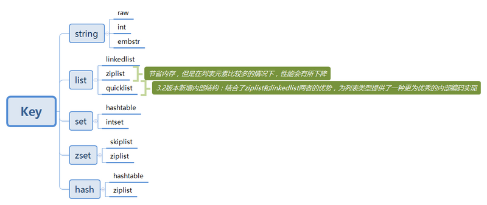
Redis 是使用了 单线程架构 和 I/O多路复用模型 来实现高性能的内存数据库服务。Redis 是单线程来处理命令的，所以命令到达 Redis 后并不会立即执行，而是进入队列之后逐个执行。对于差不多同时到达的命令执行的顺序是无法确定的。
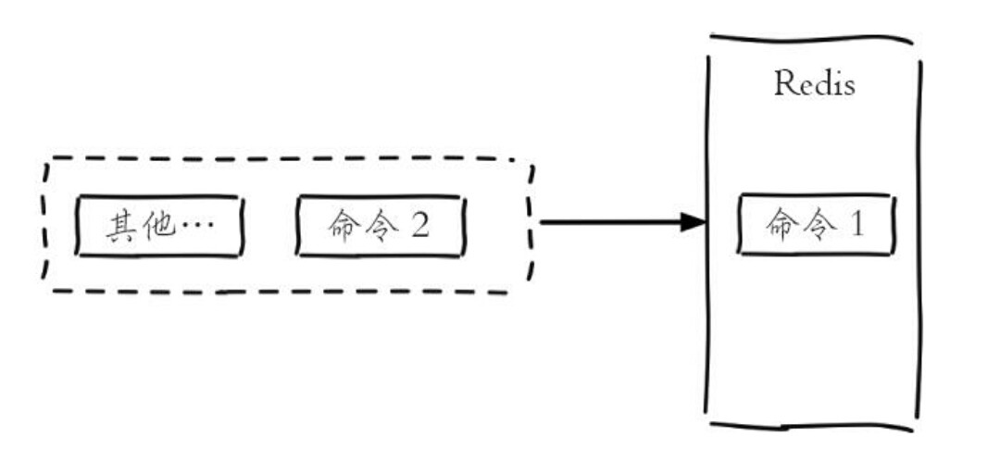
为什么单线程还能如此快？
epoll 作为 I/O 多路复用技术的实现: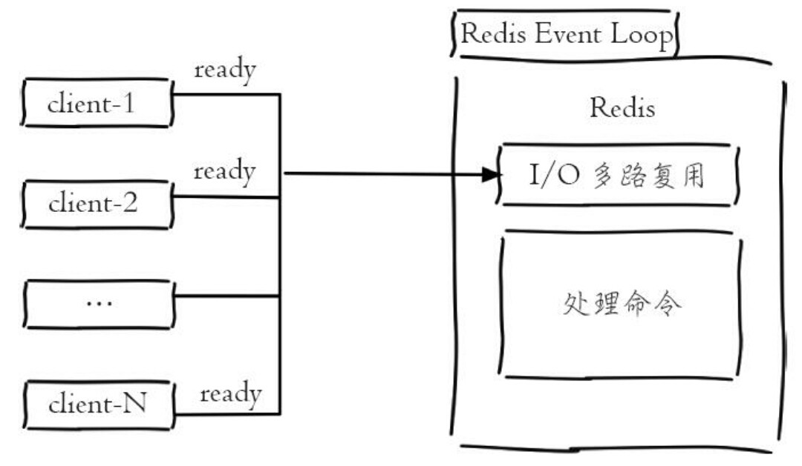
但是单线程会有一个问题，对于每个命令的执行时间是有要求的。如果某个命令执行过长，会造成其他命令的阻塞，对于 Redis 这种高性能的服务来说是致命的。
1 | # 设置秒级、毫秒级过期时间 |
setnx 与 setxx 在实际使用中有什么应用场景吗？以 setnx 为例子，由于 Redis 的单线程命令处理机制，如果有多个客户端同时执行 setnx key value，根据 setnx 的特性，只有一个客户端才能设置成功，setnx 可以作为分布式锁的一种实现方案。
1 | # 批量设置键值对 |
设计合理的键名，有利于放置键冲突和项目的可维护性，比较推荐的方式是使用:
1 | 业务名:对象名:id:[属性] |
共享 Session :
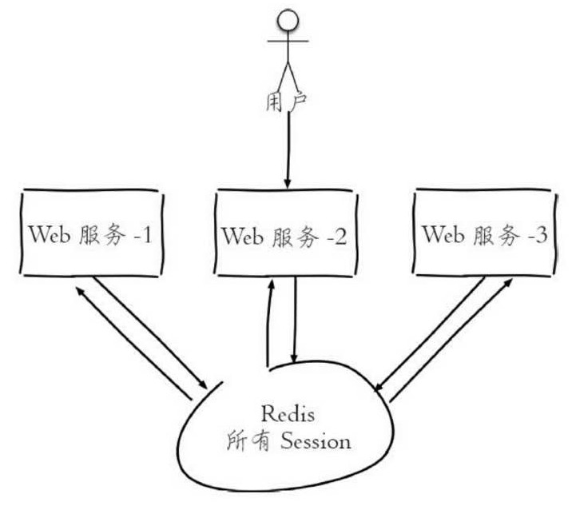
1 | # 设置值 {name=Tom} |
在使用 hgetall 的时候，如果哈希元素个数比较多，会存在阻塞 Redis 的可能。如果开发人员只需要获取部分字段，可以使用 hmget，如果一定要获取全部 field-value，可以使用 hscan 命令，该命令会渐进式遍历哈希类型。
两种情况会触发哈希类型的内部编码发生变化:
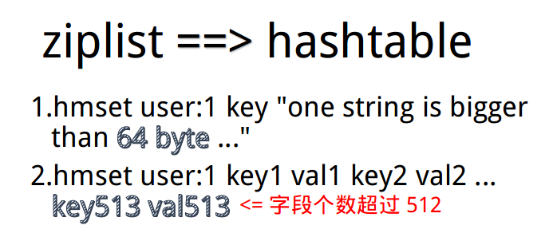
列表两端插入和弹出操作:
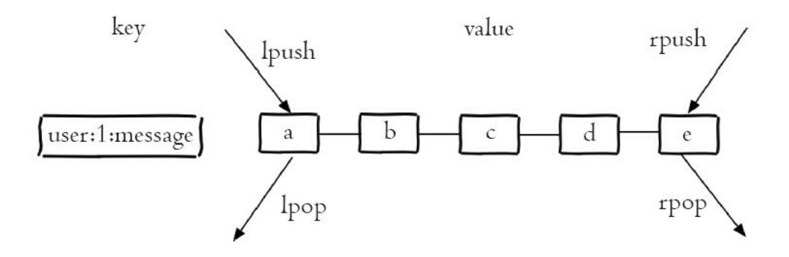
列表获取、删除等操作:
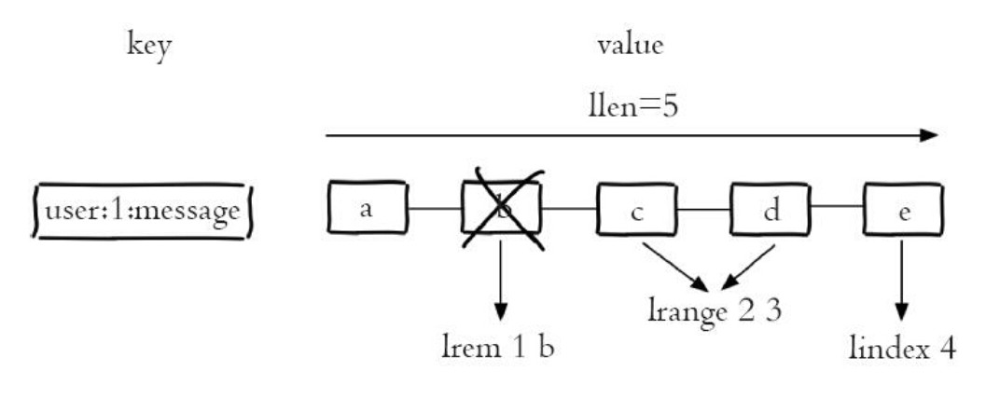
列表中的元素是有序、可重复的。
1 | # 从右边插入元素 |
lrange 的操作会获取列表指定索引范围所有的元素。索引下标有两个特点:
lrange 中的 end 选项包含了自身，这个和很多编程语言不包含 end 不太相同阻塞操作:
1 | blpop key [key...] timeout |
如果 timeout 设置为 0，那么如果列表为空，客户端会一直阻塞下去。
以 brpop 为例，在使用 brpop 时，有两点需要注意:
brpop 会从左至右遍历键，一旦有一个键能弹出元素，客户端会立即返回。brpop，那么最先执行 brpop 命令的客户端可以获取到弹出的值，另外两个客户端继续阻塞。TODO 此处应该有 1091 页图
集合不允许有重复元素，并且集合中的元素是无序的，Redis 除了支持集合内的增删改查，同时还支持多个集合取交集、并集、差集。
1 | # 添加多个元素 |
smembers 和 lrange、hgetall 都属于比较重的命令，如果元素过多存在阻塞 Redis 的可能性，这时候可以使用 sscan 来完成。
1 | # 求多个集合的交集 |
典型使用场景: 标签:
给用户添加标签:
1 | sadd user:1:tags tag1 tag2 tag3 |
给标签添加用户:
1 | sadd tag1:users user:1 user:3 |
删除用户下的标签:
1 | srem user:1:tags tag1 tag3 |
删除标签下的用户:
1 | srem tag1:users user:1 |
用户和标签的关系维护应该在一个事务内执行，防止部分命令失败造成的数据不一致。
为每个元素设置一个 score 作为排序的依据，有序集合中的元素不能重复，但是 score 可以重复，就像一个班里学生学号不能重复，但是考试成绩可以相同一个道理。
1 | # 添加成员 |
有序集合比集合提供了排序字段，但是也产生了代价，zadd 的时间复杂度为 O(log(n))，有序集合一般用在排行榜系统中
set 命令会去掉过期时间，这个问题很容易在开发中被忽视。setex 命令作为 set + expire 的组合，不但是原子执行，同时减少了一次网络通讯的时间。迁移键:
(1) move
1 | # Redis 内部多个数据库之间互相迁移，不建议使用 |
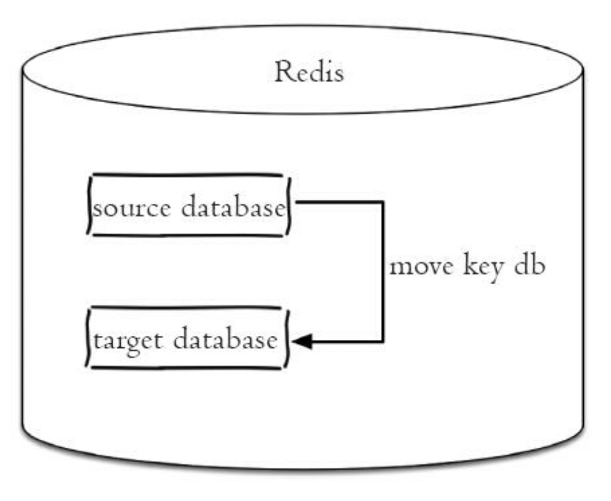
(2) dump + restore
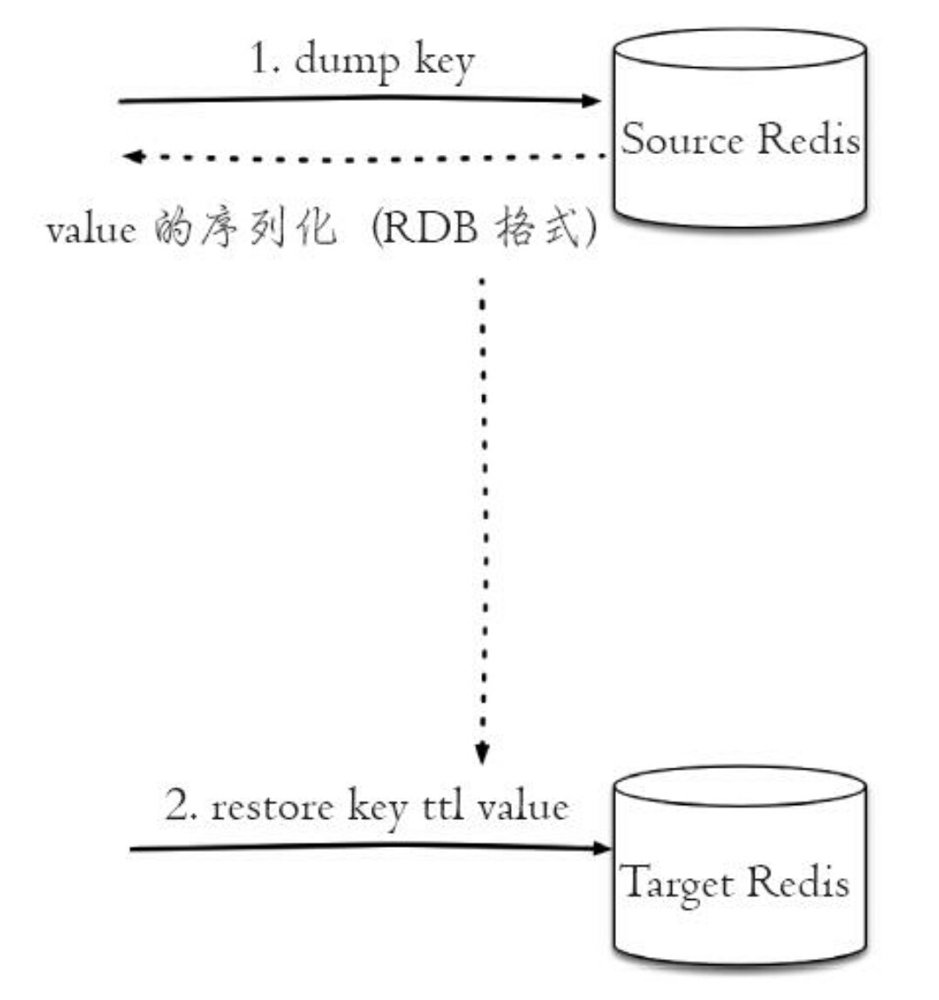
在源 Redis 上执行 dump:
1 | 127.0.0.1:6379> set hello world |
在目标 Redis 上执行 restore:
1 | 127.0.0.1:6379> get hello |
(3) migrate
migrate 命令就是将 dump, restore, del 这三个命令进行组合，从而简化了操作流程。migrate 命令具有原子性，而且从 Redis 3.0.6 以后已经支持迁移多个键的功能。
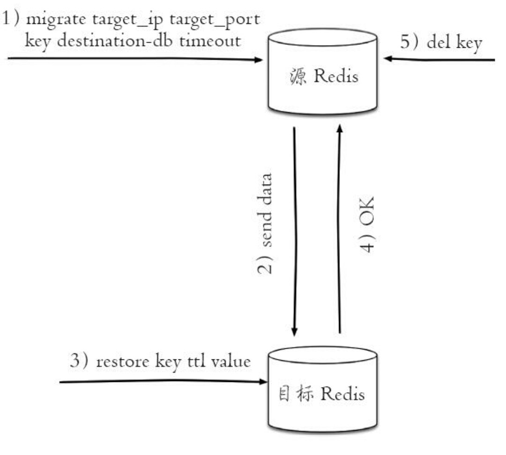
Redis 为每个客户端分配了输入缓冲区，它的作用是将客户端发送的命令临时保存，同时 Redis 会从输入缓冲区拉取命令并执行，输入缓冲区为客户端发送命令到 Redis 执行命令提供了缓冲功能:
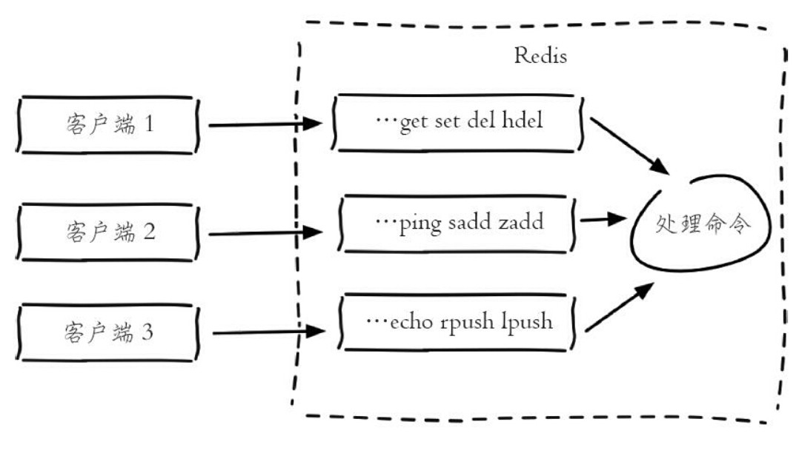
输入缓冲区使用不当会产生两个问题:
maxmemory 控制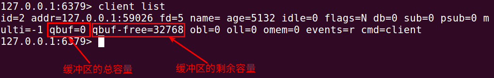
同样，Redis 为每个客户端分配了输出缓冲区，它的作用是保存命令执行的结果返回给客户端，为 Redis 和客户端交互返回结果提供缓冲:
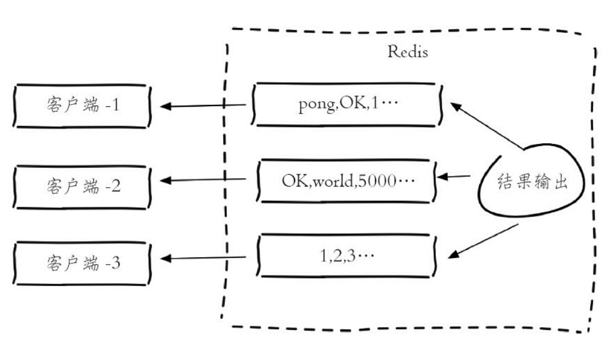
输出缓冲区做的很细致，按照客户端的不同分为三种: 普通客户端、发布订阅客户端、slave 客户端:
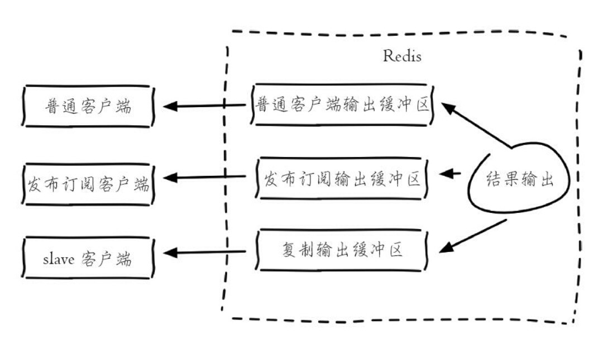
对应的配置规则为:
1 | client-output-buffer-limit <class> <hard limit> <soft limit> <soft seconds> |
<class>: 客户端类型: normal, slave, pubsub<hard limit>: 如果客户端使用的输出缓冲区大于 <hard limit>，那么客户端会立即关闭。<sort limit>, <soft seconds>: 如果客户端使用的输出缓冲区超过了 <soft limit> 并且持续了 <sort seconds> 秒，客户端会被立即关闭。实际上输出缓冲区由两部分组成: 固定缓冲区 (16KB) 和动态缓冲区，其中固定缓冲区返回比较小的执行结果，而动态缓冲区返回比较大的结果。固定缓冲区使用的是字节数组，动态缓冲区使用的是列表。当固定缓冲区存满后会将 Redis 新的返回结果存放在动态缓冲区的队列中:
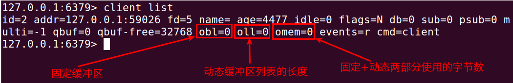
输出缓冲区同样也不会收到 maxmemory 的限制，如果使用不当同样会造成 maxmemory 用满产生的数据丢失、键值淘汰、OOM 等情况。
1 | # 查询进程号 |
如果交换量都是 0KB 或者个别的是 4KB，则是正常现象，说明 Redis 进程内存没有被交换。预防内存交换主要就是：
Redis 实例设置了 maxmemory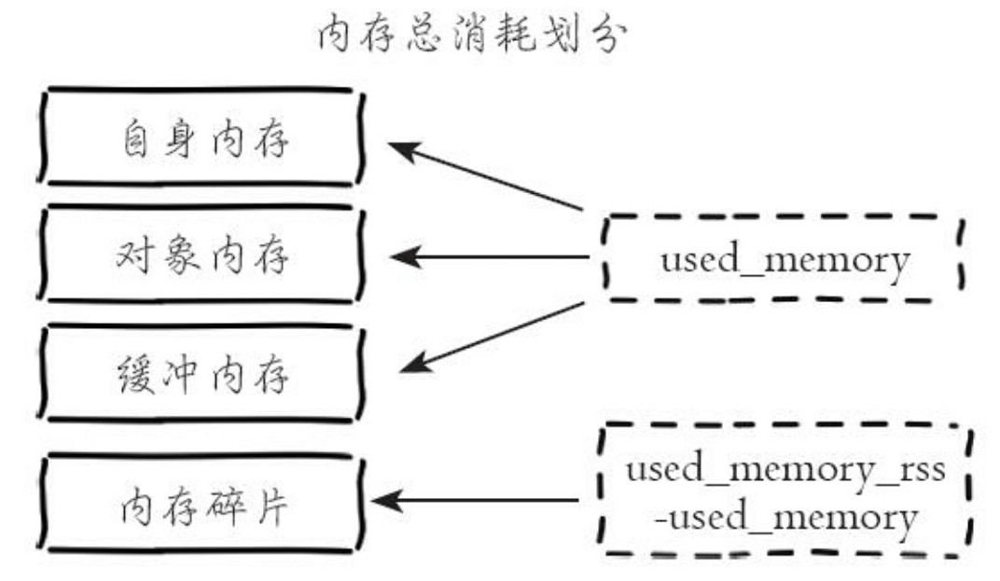
maxmemory 限制的是 Redis 实际使用的内存量，也就是 used_memory 统计项对应的内存。由于内存碎片率的存在，实际消耗的内存可能会比 maxmemory 设置的更大，实际使用时要小心这部分内存溢出。
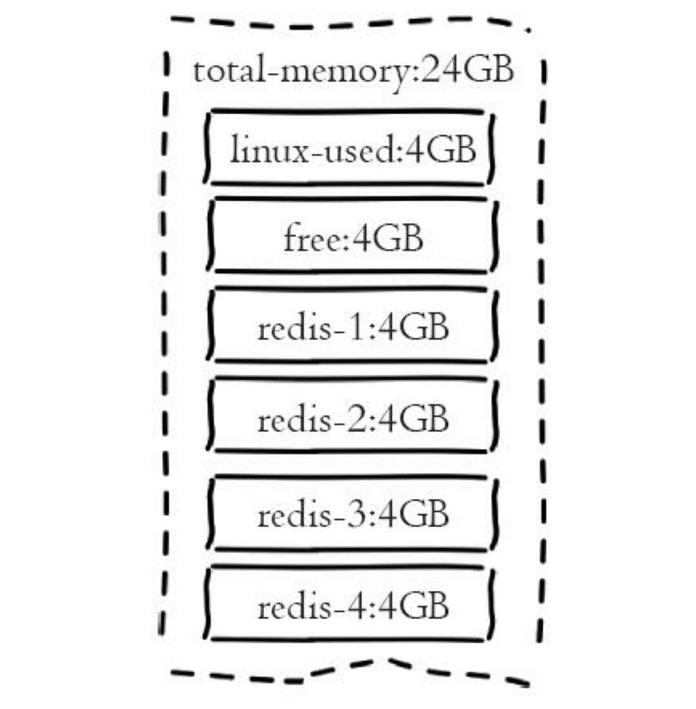
Redis 存储的所有值对象在内部定义为 redisObject 结构体:
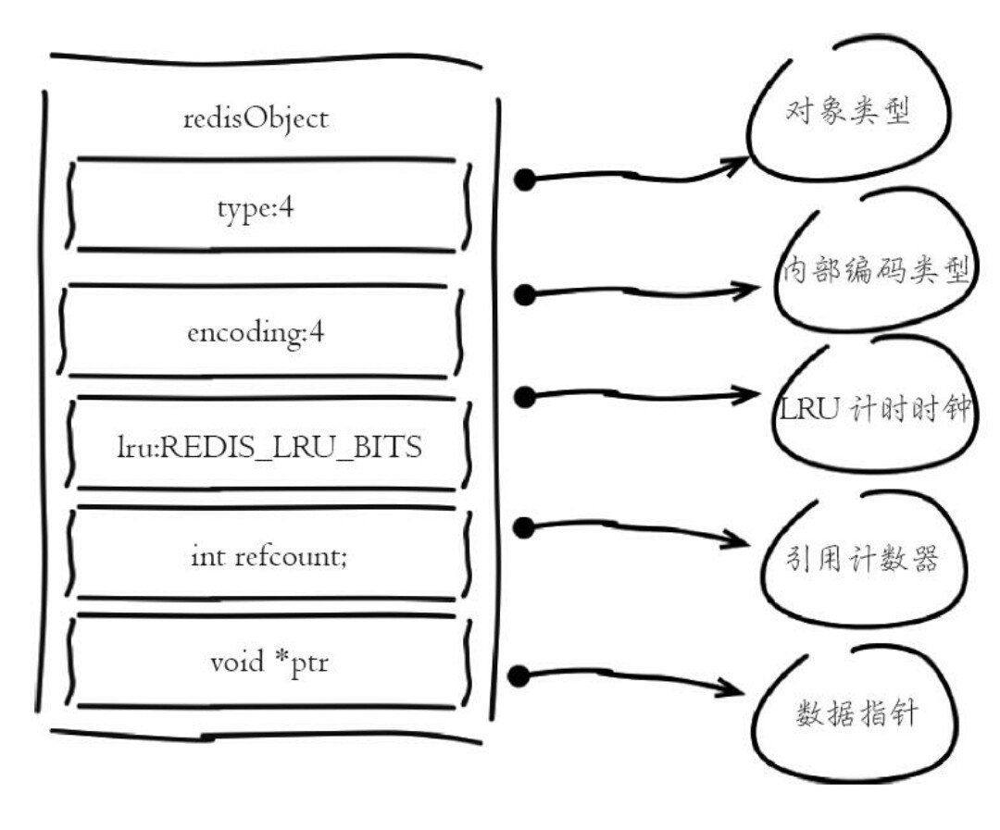
降低 Redis 内存使用最直接的方式就是缩减键 (key) 和值 (value) 的长度。
key: user:{uid}:friends:notiry:{fid} 可简化为 u:{uid}:fs:nt:{fid}value: 业务对象序列化成二进制对象放入 Redis。首先应该在业务上精简业务对象，去掉不必要的属性避免存储无效数据。其次在序列化工具选择上，应该选择更高效的序列化工具来降低字节数组大小。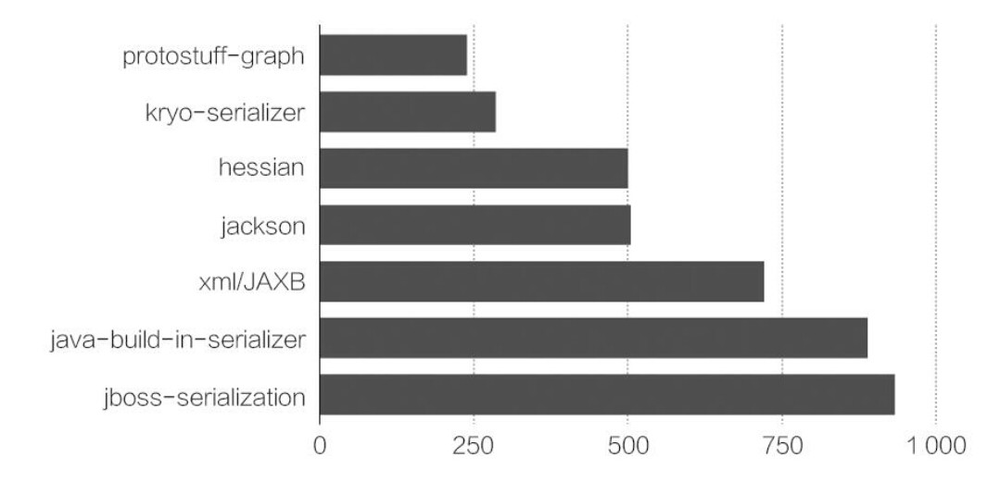
Redis 内部维护 [0 - 9999] 的整数对象池，用于节约内存。因此开发中在满足需求的前提下，尽量使用整数对象以节省内存:
1 | 127.0.0.1:6379> set foo 100 |
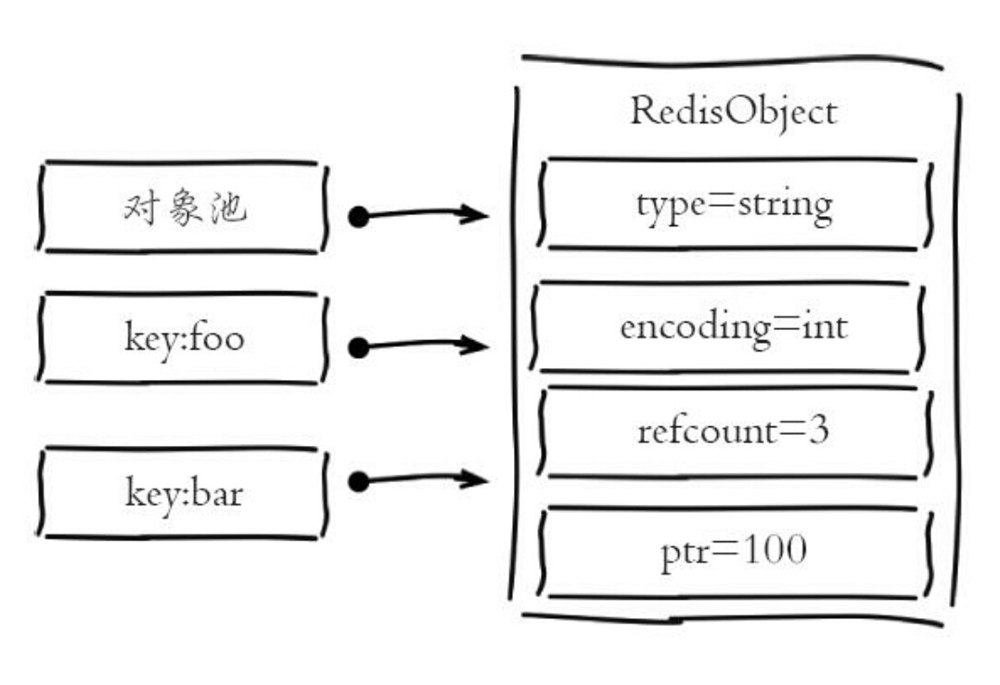
需要注意的是对象池并不是只要存储 [0 - 9999] 就可以工作。当设置 maxmemory 并启用 LRU 相关淘汰策略如: volatile-lru, allkeys-lru 时，Redis 禁止使用共享对象池。
为什么开启 maxmemory 和 LRU 淘汰策略后对象池无效? LRU 算法需要获取对象最后被访问时间，而每个对象最后访问时间存储在 redisObject 对象的 lru 字段中。对象存储意味着多个引用共享同一个 redisObject，这时 lru 字段也会被共享，导致无法获取每个对象的最后访问时间。因此两者冲突，使用时需要注意。
1 | # 匹配任意字符 |
Redis 存储键值对实际使用的是 hashtable 的数据结构，其简化模型如下:
每次执行 scan，可以想象成只扫描一个字典中的一部分键，直到将字典中的所有键遍历完毕，scan 用法如下:
1 | # 每次 scan 完，返回当前游标的值，直到重新变为 0 |
1 | 127.0.0.1:6379> set a 1 |
第一次扫描:
1 | 127.0.0.1:6379> scan 0 |
第二次扫描:
1 | 127.0.0.1:6379> scan 17 |
第三次扫描:
1 | 127.0.0.1:6379> scan 19 |
cursor 返回 0，说明所有键已经被遍历过了。
除了 scan 以外，Redis 提供了面向哈希类型、集合类型、有序集合的扫描遍历命令，解决诸如 hgetall、smembers、zrange 可能产生的阻塞问题，对应的命令分别是 hscan、sscan、zscan，它们的用法和 scan 基本类似。
1 | # 100 个客户端同时请求 Redis，一共执行 20000 次 |
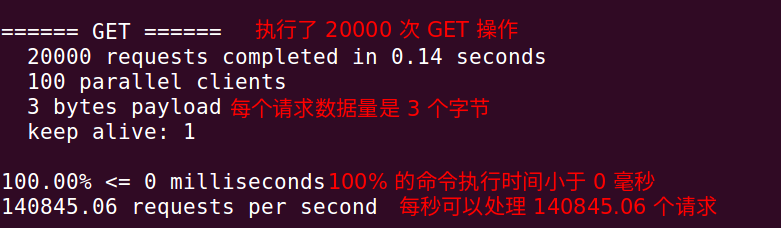
在一个空的 Redis 上执行了 redis-benchmark 后会发现只有 3 个键:
1 | 127.0.0.1:6379> keys * |
如果想向 Redis 插入更多的键，可以执行使用 -r (random) 选项，向 Redis 插入更多随机键。
可以使用 Pipeline 模拟出批量操作的效果，但是在使用时要注意它与原生批量命令的区别:
Pipeline 是非原子的。key，Pipeline 支持多个命令。Pipeline 需要服务端和客户端的共同实现。Pipeline 虽然好用，但是每次 Pipeline 组装的命令个数不能没有节制，否则一次组装 Pipeline 数据量过大，一方面会增加客户端的等待时间，另一方面会造成一定的网络阻塞，可以将一次包含大量命令的 Pipeline 拆分成多次较小的 Pipeline 来完成。
为了保证多条命令组合的原子性，Redis 提供了简单的事务功能以及集成 Lua 脚本来解决这个问题。Redis 提供了简单的事务，之所以说它简单，主要是因为它不支持事务中的回滚特性，同时无法实现命令之间的逻辑关系计算，当然也体现了 Redis 的 “keep it simple” 的特性。
RDB 持久化是把当前进程数据生成快照保存到硬盘的过程，触发 RDB 持久化过程分为手动触发和自动触发。
bgsave 手动触发: Redis 进程执行 fork 操作创建子进程，RDB 持久化过程由子进程负责，完成后自动结束。阻塞只发生在 fork 阶段，一般时间很短。运行 bgsave 命令对应的 Redis 日志如下: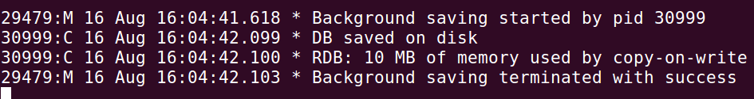
查看最近一次 fork 操作的耗时 (723 微秒):
1 | zk@zk-pc:~$ redis-cli info stats | grep latest_fork_usec |
子进程创建 RDB 文件，根据父进程内存生成临时快照文件，完成后对原有文件进行原子替换，执行 lastsave 命令可以获取最后一次生成 RDB 的时间:
1 | 127.0.0.1:6379> lastsave |
save 相关配置，如 save m n。表示 m 秒内数据集存在 n 次修改时，自动触发 bgsave。bgsave 生成 RDB 文件并发送给从节点。debug reload 命令重新加载 Redis 时，也会自动触发 save 操作。shutdown 命令时，如果没有开启 AOF 持久化功能则自动执行 bgsave。1) RDB 的优点:
bgsave 备份，并把 RDB 文件拷贝到远程机器或者文件系统中（如hdfs），用于灾难恢复。2) RDB 的缺点:
bgsave 每次运行都要执行 fork 操作创建子进程，属于重量级操作，频繁执行成本过高。Redis 的 RDB 文件保存的位置，如果使用 Redis 默认自带的配置文件 redis.conf 来启动 redis-server 的话，那么其工作目录如下所示:
1 | dir ./ |
其代表的含义是，在哪个目录运行的 redis-server 启动的 redis 服务器，那么 dir 目录就会指向哪个文件，相应的 dump.rdb 文件也就会保存在这个目录下:
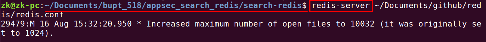
dump.rdb 文件也在这个目录下:
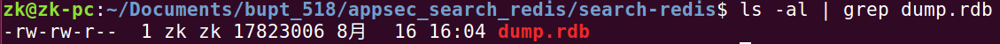
另外使用命令 redis-cli config get dir 也能得到工作目录:
1 | 1) "dir" |
1 | # 列出能与 Redis 服务端相连的所有客户端连接信息 |
age 和 idle 字段分别代表当前客户端已经连接的时间和最近一次的空闲时间:
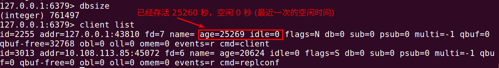
某些情况下，可能存在大量 idle 连接，无论是从网络连接的成本还是超过 maxclients 的后果来说都不是什么好事，因此 Redis 提供了 timeout (单位为秒) 参数来限制连接的最大空闲时间，一旦客户端连接的 idle 时间超过了 timeout，连接将会被关闭。
1 | 127.0.0.1:6379> config set timeout 300 |
实际开发中，应该在客户端使用上添加空闲检测和验证等措施，例如 JedisPool 使用 common-pool 提供的三个属性:
minEvictableIdleTimeMillistestWhileIdletimeBetweenEvictionRunsMillsclient list 中的 flags 用于标识当前客户端的类型:
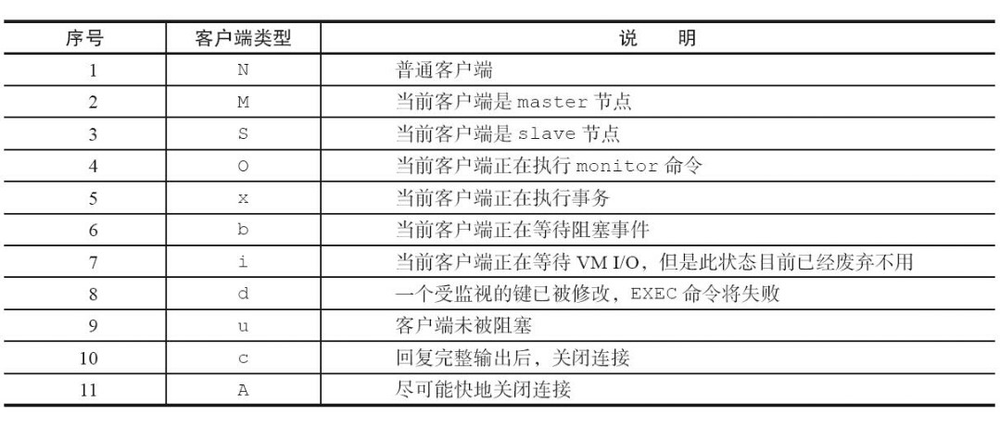
杀掉指定 IP 地址和端口的客户端:
1 | client kill ip:port |
RedisRedis3) 内存回收策略 - 删除过期键对象:
Redis 采用 惰性删除和定时任务删除机制实现过期键的内存回收。
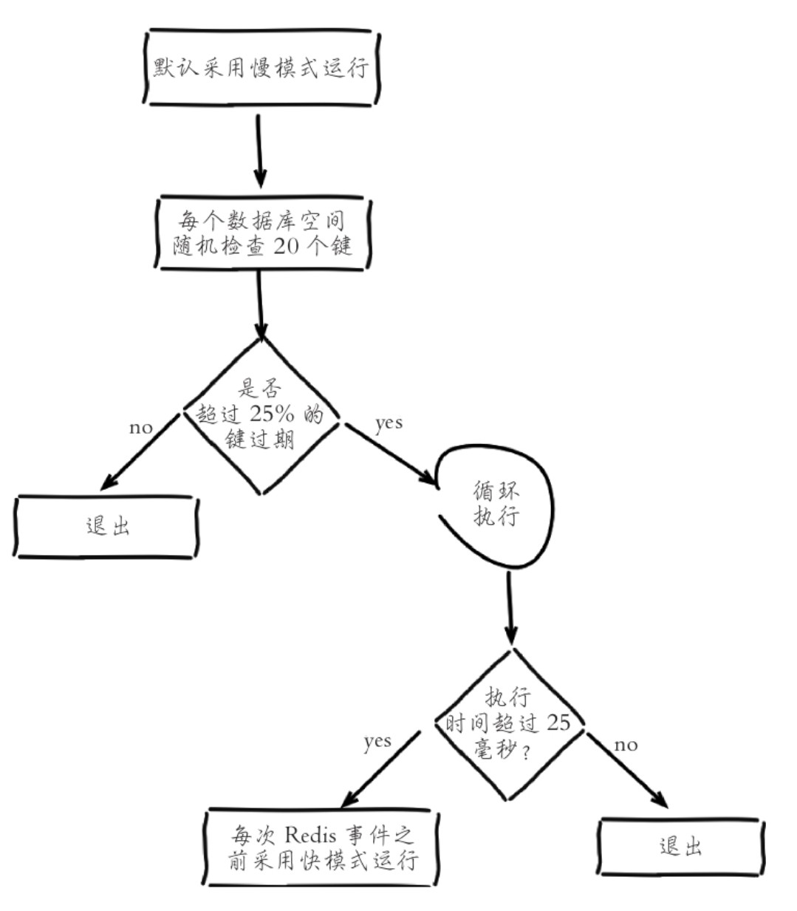
快慢两种模式内部删除逻辑相同，只是执行的超时时间不同。
3) 内存回收策略 - 内存溢出控制策略:
当 Redis 所用内存达到 maxmemory 上限时会触发相应的溢出控制策略。 具体策略受 maxmemory-policy 参数控制， Redis 支持 6 种策略，如下所示：
noeviction：默认策略，不会删除任何数据，拒绝所有写入操作并返回客户端错误信息 （error）OOM command not allowed when used memory，此时Redis 只响应读操作。volatile-lru：根据 LRU 算法删除设置了超时属性（expire）的键，直到腾出足够空间为止。如果没有可删除的键对象，回退到 noeviction 策略。allkeys-lru：根据 LRU 算法删除键，不管数据有没有设置超时属性，直到腾出足够空间为止。allkeys-random： 随机删除所有键，直到腾出足够空间为止。volatile-random： 随机删除过期键，直到腾出足够空间为止。volatile-ttl：根据键值对象的 ttl 属性，删除最近将要过期数据。如果没有，回退到 noeviction 策略。内存溢出控制策略可以采用 config set maxmemory-policy {policy} 动态配置。 Redis 支持丰富的内存溢出应对策略，可以根据实际需求灵活定制，比如当设置 volatile-lru 策略时，保证具有过期属性的键可以根据 LRU 剔除，而未设置超时的键可以永久保留。还可以采用 allkeys-lru 策略把 Redis 变为纯缓存服务器使用。当Redis 因为内存溢出删除键时，可以通过执行 info stats 命令查看 evicted_keys 指标找出当前 Redis 服务器已剔除的键数量。每次Redis 执行命令时如果设置了 maxmemory 参数，都会尝试执行回收内存操作。当 Redis 一直工作在内存溢出 （used_ memory> maxmemory） 的状态下且设置非 noeviction 策略时，会频繁地触发回收内存的操作，影响Redis 服务器的性能。